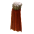

Открыть в интерактивной вики →
| Требуемый уровень | 115 |
|---|---|
| Редкость | Психорар |
| Улучшения | звёзды, орбы, осколки |
| Тип | Плащи |
| Цена | 28 750 000 |
| Ремонт | 11.5kk |
| Заряды | 3000 |
| Вместимость дрифов | 24 |
| Требуемая ловкость | 115 |
| Сила | 35 |
| Ловкость | 45 |
| Здоровье | 300 |
| Мана | 80 |
| Выносливость | 40 |